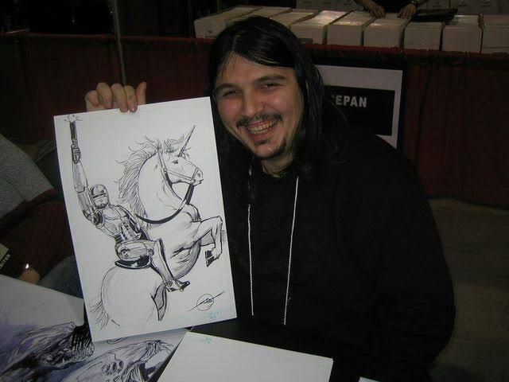
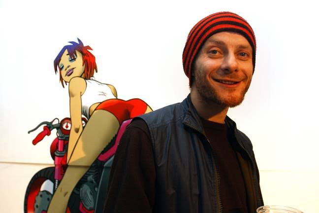

INTRODUCTION
At the youthful age of 18, I proudly identify as a creative digital artist, wielding an expansive knowledge in the realms of drawing and creative pursuits. My expertise extends into the domain of graphic design, with a predominant focus on crafting designs that seamlessly intertwine into cohesive and aesthetically pleasing compositions.
ARTISTIC JOURNEY
My journey in this creative sphere commenced when I unearthed the realization that my drawing abilities held the potential for a purpose far beyond the confines of a personal hobby. Since then, I've dedicated myself to honing my craft, cultivating a distinctive art style, and refining my discerning eye for design.
ROOT OF CREATION
The genesis of my artistic inspiration lies in the rich tapestry of anime, with a special fondness for "Jojo's Bizarre Adventure," which stands as my unequivocal favorite among the myriad of series I've explored. Additionally, the world of comic books has played a pivotal role in shaping my artistic sensibilities, infusing my work with a diverse range of influences.

